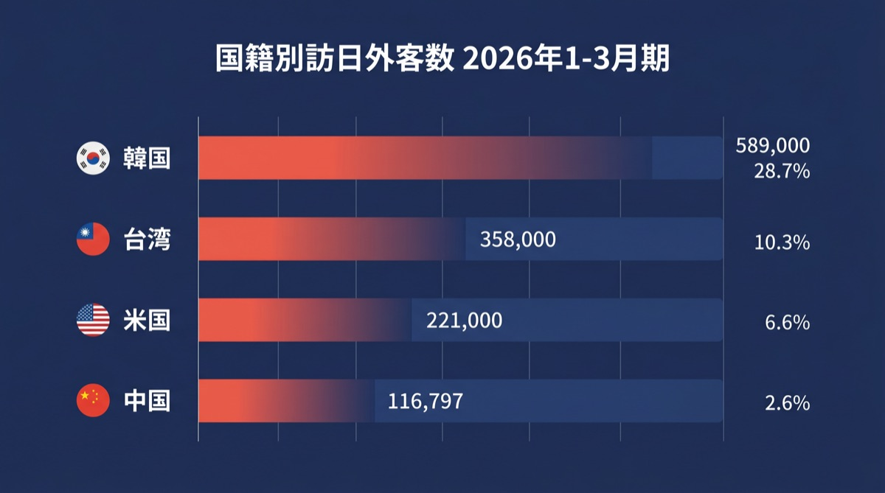
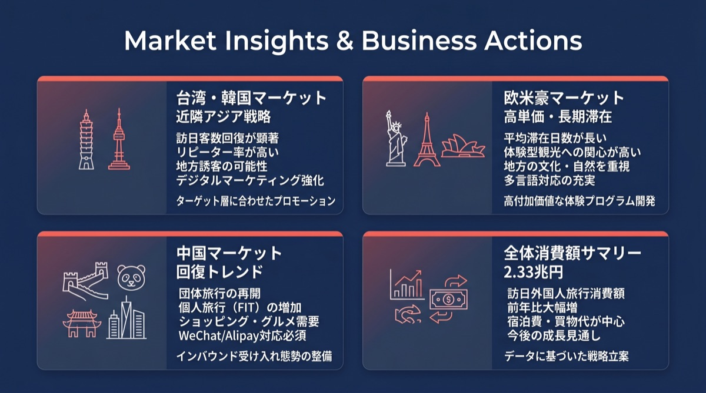

AI Executive Summary
2026年第1四半期のインバウンド市場は、記録的なペースで推移しています。3月の訪日外客数は361万8,900人を記録し、単月として過去最高を更新。桜シーズンとイースター休暇の重なりが需要を強く牽引しました。消費額も2兆3,378億円に達しており、日本経済におけるインバウンドの重要性がさらに高まっています。
一方で、国籍別に見ると明暗が分かれています。韓国・台湾・米国が過去最高ペースで成長を続ける一方、中国市場は回復に遅れが見られます。事業者は「脱・特定国依存」の多角的なマーケティング戦略への移行が急務です。
国籍別 訪日外客数 (2026年3月)

国籍別 消費額シェア (1-3月期)
市場別の詳細動向とビジネスアクション

🇹🇼 台湾・🇰🇷 韓国：安定した巨大市場
訪日客数の1位、2位を占める韓国・台湾は、消費額でもトップ2となっています。特に台湾は消費額16.6%のシェアを誇り、購買意欲の高さが伺えます。リピーター率が非常に高いため、王道の観光地だけでなく、地方都市やニッチな体験型コンテンツへの誘導が有効です。
🇺🇸 欧米豪：単価と滞在日数の伸びに注目
米国は3月に37万人を突破し、消費額でも4位につけています。欧米豪市場は1人当たりの消費額が高く、長期滞在の傾向があります。高付加価値な宿泊施設や、伝統文化を深く体験できるプレミアムツアーの需要が拡大しています。
🇨🇳 中国：減少傾向と今後の戦略
前年比で半減となっている中国市場ですが、依然として消費総額では3位（2,715億円）をキープしており、一人当たりの消費額（客単価）の高さは健在です。今後は「爆買い」から「体験・ウェルネス・美容」といった目的型ツーリズムへのシフトが予想されるため、小紅書（RED）などを活用したピンポイントな富裕層マーケティングが鍵となります。
データの出典・引用元について
本レポートの各種データは、以下の公的機関が公表している統計資料を基に、PROTECHのAIシステムが自動収集・解析して作成しています。
データに基づいたインバウンド集客を始めませんか？
PROTECHでは、本レポートのようなマクロデータと、小紅書（RED）などのSNSミクロデータを掛け合わせ、貴社に最適なインバウンドマーケティング戦略をご提案します。
無料マーケティング相談はこちら